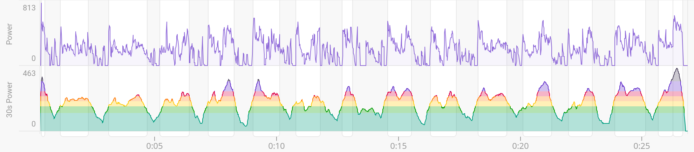

A Complete Guide to Custom, Interactive and Responsive Data Visualizations with D3
Starting out with D3.js can be overwhelming, especially for those that come from data background and don't have much exposure to JavaScript. I promise that the interactivity and complete control of your data visualizations are 100% worth it!
This guide is intended to give you all the building blocks you need to create an interactive, responsive and specially customized data visualizations. For a learning example, we'll use some of my personal cycling data, and we'll replicate (closely, but not exactly) one of my favorite data visualizations for cycling.
Of course, in this day and age, you just ask AI to do it for you, but then you would miss out on all the fun of figuring something out.
Get some coffee! Open a code editor! Let's get started!
Introduction: A little bit of bike racing background
Competitive bike racing is all about saving your energy for when it matters the most. Racers who "burn too many matches" early on in the race will have "empty" legs when it's the most important, frequently that's at the very end of the race. One way to analyze the data after the race is to look at the "matches burned" throughout the race to understand why a racer didn't have a good power output in the finishing sprint.
I first saw this chart on intervals.icu, a training data platform. The chart is intended to easily spot "burned matches" in power output from a workout or bike race. The colors in the chart correspond to the power zones, which are used to determine training effect for the workout, or even just a portion of it (an interval). Power zones can be used to simplify the data and easily understand what was teh effect of the workout of a portion of the workout. Power zones also tell which energy system the workout is stressing:
- Warmup or active recovery
- Endurance
- Tempo
- Lactate Threshold
- VO2Max
- Anaerobic Capacity
- Neuromuscular Power
I'd be happy to talk about power zones all day long, but let's leave that for another time and get back to our data visualization. You can read more here if you're interested

The image above shows a screenshot from intervals.icu: the top panel is the raw power chart, and the bottom panel is a 30-second moving average of the power data where the colors of the area under the curve are based off power zones. The latter is the chart we will recreate here. I first re-created this chart while learning D3.js for the first time, about 3 years ago. I hope this tutorial will be helpful for others!
Outline
There are a few steps needed to create this plot. Here I'll walk through everything I did to create the chart on this webpage, even if it's not related to creating a D3 data visualization. If you're only interested in how to create a plot with bands of color based on y-value, feel free to skip ahead!
The Data
In order to reproduce the power chart, we will need the power data from a workout or a race activity. I can download any activity data from my Garmin account in a .fit format. This is a binary format, and it takes a bit of processing, which I did in Python.
In order to extract the power data from the .fit file, I used python-fitparse package. First, we'll import all packages we'll use for this data transformation
import pandas as pd
import fitparse
Now, we'll read the .fit file with fitparse using the
FitFile()
function and passing in the file path and name of our file. Since I saved the .fit in
the same directory as my Python code is in, I only need the file name.
However, there's a bit of "manual" work required to extract the time series power data. The
.fit file contains messages: one for each data entry received from the sensor,
in this case a power meter on my bike. There are many different fields, i.e. message names.
Here, we will only extract the timestamp and power, but I encourage you
to explore other data that's recorded in your workout activities.
fitfile = fitparse.FitFile("19231612591_ACTIVITY.fit")
# Create an empty list where we will append a dictionary for each time stamp in the data
data_parse = []
# Loop through data entries. .fit file contains "messages" for each data entry
for record in fitfile.get_messages('record'):
# Create an empty dictionary for each time stamp
data_row = {}
for data in record:
if data.name in ["timestamp", "power"]:
data_row[data.name] = data.value
data_parse.append(data_row)
# Create a data frame using pandas package
raw_df = pd.DataFrame(data_parse)
Now that we have the data extracted, we'll do a bit of transformations. First, we don't care about
the time and date of each data entry, we only care about how much time elapsed from the start of the
workout. We will create elapsed_time column in our data by subtracting the start
time from all timestamps. Then we'll convert it to seconds.
We will also need to transform the power data into a 30-second moving average.
raw_df["elapsed_time"] = (raw_df.timestamp - raw_df.timestamp.iloc[0]).apply(lambda x: x.seconds)
raw_df["smooth_power"] = raw_df["power"].fillna(0).rolling(30, center=True, min_periods=1).mean()
raw_df.drop("timestamp", axis=1, inplace=True)
Lastly, we'll export the data in .csv file.
raw_df.to_csv("cycling_activity_" + activity_id + ".csv", index=False)
We won't actually need the power column for this plot, but I decided to export it in
case
I wanted to create the "raw power" chart later on. The data extraction part is over, and now the fun
part begins!
Importing the data in JavaScript
Well, it's almost time for the fun part. We need to be able to read the data from the
.csv
file in this website using JavaScript. Since this is a static webpage here (no web server to fetch
the data from the backend) and I don't care about this data being public and easy to scrape
I'll just copy the csv values into a JS function as a string.
Then I'll use csvParse() function from D3.js to turn it into a JS object. I
could have exported it as a .json directly, but this way we get to learn about this D3
function for parsing csvs.
export function get_data () {
const csv_string = (
`elapsed_time,power,smooth_power
0,0.0,406.7142857142857
1,0.0,395.53333333333336
...
1612,0.0,115.94117647058823
1613,0.0,96.125`
);
return d3.csvParse(csv_string, d3.autoType);
}
Note that the ... is the middle of the data above is just to shorten the function here.
Now, we'll switch to a new JS file, I called it power_chart.js where we'll
create the power chart.
Creating a canvas
D3.js is not like ggplot or matplotlib where you can just
pass
the data you want for your x and y axis and the plot appears on the
screen.
First, we need to create a space on the screen for our plot. In order to do that, we need to decide
what size we want the whole plot to be. Then we need to subtract some of that space for
margins where our axis will be.
export function power_chart(container_id, {width, dataset} ) {
let dimensions = {
width: width,
height: 150,
margin: {
top: 5,
right: 0,
bottom: 40,
left: 40,
},
}
dimensions.boundedWidth = dimensions.width - dimensions.margin.left - dimensions.margin.right;
dimensions.boundedHeight = dimensions.height - dimensions.margin.top - dimensions.margin.bottom;
}
A side note, I've learned D3 from watching
Curran Kelleher's tutorials, and I still
use some of the
conventions and variable names from his tutorials. I highly recommend his D3.js YouTube videos and
blog posts for learning D3!
The convention of passing the container_id string and props object with
everything else we'll need for the chart comes from Curran Kelleher.
You might be wondering, why did I only include an argument for the width for the chart and not all relevant dimensions, or why did I include any dimensions at all? The reason is that I want this chart to be responsive, i.e. it's width will change depending on what the width of the window is.
Now that we have our dimensions, let's initiate our svg element and define our chart
boundaries, i.e. the bounds.
const container = d3.select(container_id)
container.selectAll("svg").remove()
const svg = container.append("svg")
.attr("width", dimensions.width)
.attr("height", dimensions.height)
const bounds = svg.append("g")
.style("transform",
`translate(${dimensions.margin.left}px, ${dimensions.margin.top}px)`)
I owe you a couple of explanations. First, the reason for .remove() on the
svg element selection from the container is because, as I mentioned earlier,
the width of this chart will be responsive to the changes in the window size, and we will re-draw
the chart any time the window size changes. If we didn't remove the old charts, we would end up with
multiple charts on top of each other. Second, the "transform" will move the
bounds from the top left corner to create our top and left margins.
Defining the size of the canvas is not the only extra work we need to do compared to your favorite
R or Python plotting library. Our data is in units of seconds and Watts,
but we need to know how many pixels on the screen correspond to these units in both directions.
In other words, we need to rescale our data into pixels on the screen!
The following code first defines accessor functions for x and y
dimensions in our plot, and then defines scales based on the range of values in the data and the
sizes of the canvas we defined above.
const yValue = d => d.smooth_power;
const xValue = d => d.elapsed_time/60;
const yScale = d3.scaleLinear()
.domain([0, d3.extent(dataset, yValue)[1]])
.range([dimensions.boundedHeight, 0])
const xScale = d3.scaleLinear()
.domain(d3.extent(dataset, xValue))
.range([0, dimensions.boundedWidth])
A gentle reminder that in computer graphics, the y-direction is positive pointing down
and negative pointing up.
This may seem a bit "much", but it gives us more control. And with great control comes... a lot of lines of code to just create a line chart.
Define the "gradient"
In order to create the area colors for the power zone bands, we'll use a
linearGradient SVG element. This linearGradient can then be
applied
to other SVG elements.
Here's a simple
example
of how gradient works with two colors. We're going to extend this to more colors. Our chart won't
have color "gradient" strictly speaking, but this allows us to define colors that can be applied to
the area and the curve.
Before we continue, we'll need a bit more information: we need to know where the power zone boundaries are. They can be defined in different ways, but my settings on intervals.icu are below, along with the hex-values for the colors we will use.
const thresholdWatts = 244;
const zoneBoundaries = [
0, 0.55*thresholdWatts, 0.75*thresholdWatts, 0.90*thresholdWatts,
1.05*thresholdWatts, 1.20*thresholdWatts, 1.50*thresholdWatts, yScale.domain()[1]];
const zoneColors = ["#3db39f", "#3db33f", "#fcd549", "#fc9c49", "#e34074", "#8963d8", "#797388"];
So how do we use this "gradient" to have solid bands of color and no actual gradient?
The linearGradient allows us to define color zones through "stop" (and implicitly
start)
points, in "offset" property. We can add as many colors as we want (or as many as we
can fit).
The way we'll get the solid color "bands" for each power zone, is by using the same color
twice, and by making the "gradients" where the color changes from one to the next have zero height.
We'll define the "offset" in the relative units of the y-axis, i.e. the percent of the
boundedHeight we want each color to occupy.
The data that we will pass to the linearGradient will be a list of dictionaries with
the "offset"
and "color" fields.
const zonesGradient = []
for (let i=0; i < zoneBoundaries.length-1; i++){
// check that data actually contains the zone
if (zoneBoundaries[i] <= yScale.domain()[1]){
// Add the "lower" boundary for the zone
zonesGradient.push({
'offset': `${
100-100*( yScale(zoneBoundaries[i]) / yScale.range()[0] )
}%`,
'color': zoneColors[i]
});
// Add the "upper" boundary for the zone
zonesGradient.push({
'offset': `${
100-100*( yScale(zoneBoundaries[i+1]) / yScale.range()[0] )
}%`,
'color': zoneColors[i]
});
}
}If this is confusing, take the time to calculate (on paper) what each color band should be. It's a very simple math. Don't just take my word for it!
Next, we add the linearGradient to our bounds.
bounds.append("linearGradient")
.attr("id", "line-gradient")
.attr("gradientUnits", "userSpaceOnUse")
.attr("x1", 0)
.attr("y1", yScale(yScale.domain()[0]))
.attr("x2", 0)
.attr("y2", yScale(yScale.domain()[1]))
.selectAll("stop")
.data(zonesGradient)
.enter()
.append("stop")
.attr("offset", (d) => d.offset)
.attr("stop-color", (d) => d.color);Area and line charts
Now all that's left is to apply our linear gradient to the area and the line chart! Notice, that the
gradient is passed in as "fill" attribute to the area and "stroke" attribute to the line elements
via a url to the gradient id we gave it above.
// Area chart
const alpha = 0.3
const areaOutline = d3.area()
.x(d => xScale(xValue(d)))
.y0(d => yScale(yScale.domain()[0]))
.y1(d => yScale(yValue(d)));
bounds.append("path")
.attr("d", areaOutline(dataset))
.attr("fill", "url(#line-gradient)")
.attr("opacity", alpha);
// Line chart
const lineGeneratorSmooth = d3.line()
.x(d => xScale(xValue(d)))
.y(d => yScale(yValue(d)));
bounds.append("path")
.data(dataset)
.attr("d", lineGeneratorSmooth(dataset))
.attr("fill", "none")
.attr("stroke", "url(#line-gradient)" )
.attr("stroke-width", 1.5);Axis
To finalize the plot, we just need to add the axis. I'll try to replicate my plot inspiration here as closely as possible.
const axisOpacity = 0.5;
const yAxisGenerator = d3.axisLeft()
.scale(yScale)
.tickValues(yScale.domain());
bounds.append("g")
.call(yAxisGenerator)
.attr("opacity", axisOpacity);
const xAxisGenerator = d3.axisBottom()
.scale(xScale)
.tickFormat(d => d3.timeFormat("%M:%S")(new Date(d * 60 * 1000)));
bounds.append("g")
.call(xAxisGenerator)
.style("transform", `translateY(${
dimensions.boundedHeight
}px)`).attr("opacity", axisOpacity);The Magic of D3.js
What is the point of doing all this work with D3.js if we don't add some interactivity?! We'll add
mouse hover that shows exact x and y values. Let's add lines that
guide the eye from the point being hovered to the values on the axis. First, we define the lines,
but keep them hidden until the mouse hovers over.
const verticalLine = bounds.append("line")
.attr("y1", dimensions.boundedHeight)
.style("stroke", "black")
.style("opacity", 0); // Hidden at the start
const horizontalLine = bounds.append("line")
.attr("x1", 0)
.style("stroke", "black")
.style("opacity", 0); // Hidden at the start
Once the mouse hovers over the chart, we can extract the coordinated of the pointer. However, we
want
to highlight the closest actual value in the data, not an interpolated value on the screen.
We'll also add a text with exact x and y values to make it easy for the
user
to see those values, as opposed to having to estimate them from the ticks on the axis. Let's first
initialize the variables for those values
const x_tooltip = svg.append("text")
.attr("x", 0)
.attr("y", dimensions.boundedHeight + dimensions.margin.top)
.attr("font-size", "10px")
.attr("fill", "black")
.attr("dominant-baseline", "hanging")
.attr("text-anchor", "middle")
.attr("dy", "25px")
.text("");
const y_tooltip = svg.append("text")
.attr("id", "y-tooltip")
.attr("x", 0)
.attr("font-size", "10px")
.attr("fill", "black")
.attr("dominant-baseline", "hanging")
.attr("text-anchor", "start")
.text("");
The part of the code is a bit longer, but this is what it does:
As the mouse hovers over the plot, we read off the x value the mouse in pointing at,
but we need to find the closest value we have in the data in order to know what is the value
of the y axis at that location. We will use d3.bisector to find the
closest
x value, then invert it to find the index in the data for that value.
Finally, we will access the y value at that index.
const bisect = d3.bisector(d => xValue(d)).center;
svg.on("mousemove", function(event) {
const [xMouse, yMouse] = d3.pointer(event); // Get mouse position
// if the mouse is hovering over the chart bounds
if (
xMouse >= dimensions.margin.left && xMouse <= dimensions.width - dimensions.margin.right
&& yMouse <= dimensions.height - dimensions.margin.bottom && yMouse >= dimensions.margin.top
) {
const xMouseTime = xScale.invert(xMouse - dimensions.margin.left);
const i = bisect(dataset, xMouseTime);
verticalLine
.transition()
.duration(20)
.attr("x1", xScale(xMouseTime))
.attr("x2", xScale(xMouseTime))
.attr("y2", yScale(dataset[i].smooth_power))
.style("opacity", axisOpacity);
horizontalLine
.transition()
.duration(20)
.attr("x2", xScale(xMouseTime))
.attr("y1", yScale(dataset[i].smooth_power))
.attr("y2", yScale(dataset[i].smooth_power))
.style("opacity", axisOpacity);
y_tooltip
.transition()
.duration(20)
.attr("y", yScale(dataset[i].smooth_power))
.text(dataset[i].smooth_power.toFixed(0))
x_tooltip
.transition()
.duration(20)
.attr("x", dimensions.margin.left + xScale(xMouseTime))
.text(d3.timeFormat("%M:%S")(new Date(dataset[i].elapsed_time * 1000)))
} else {
// the mouse "exits" the bounds
verticalLine.style("opacity", 0)
horizontalLine.style("opacity", 0)
}
});
} // closing braces for the power_chart function
Believe it or not, we are done with the D3.js part! Now, all we need to do is call the
power_chart function with correct arguments.
Our main JavaScript module
I mentioned earlier that we will want the chart to be responsive to the size of the window that the
website is being viewed on. This is where we configure that! The code below reads in the size of the
div we allocated for the chart, and then renders teh chart with that size. The last row
add an Event Listener that re-renders the chart any time the window size changes.
import {get_data} from "./csv_data.js";
import {power_chart} from "./power_chart.js"
async function chartResize() {
const data_js = get_data();
var chartDiv = document.getElementById("wrapper");
var width = chartDiv.clientWidth;
power_chart("#wrapper", {"width": width, dataset: data_js})
}
// first render
await chartResize();
window.addEventListener('resize', chartResize);Final Remarks
If you have made it this far, congratulations! You've gone from zero knowledge of D3.js to learning how to make a super custom and interactive data visualization! Best of all, you can use the template shown here to build other charts!
Safe sails on your data viz journey!